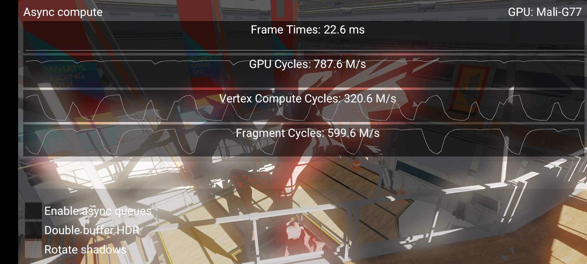

UsingAsynchronousComputeOnArmMaliGPUs
Table of Contents
- Summary
- UsingAsynchronousComputeOnArmMaliGPUs
- What is even the point of async compute?
- The critical importance of keeping hardware queues fed
- The case study: Compute for post effects
- The problematic bubble
- Can we not just complete the entire frame in compute and present?
- Starting point of sample
- How do you get those hardware stats?
- Going async
- The technique
- Implementation specifics
- What if I reorder submissions across frames instead?
- Downsides with compute workloads
- Further best practices
- Conclusion
- Q&A
UsingAsynchronousComputeOnArmMaliGPUs note.
<!– more –>
Summary
- 桌面级硬件 通常是一个单独的 Graphics Queue，以及许多只能运行计算工作负载的 Compute Queue
- Arm Mali 是 Tile-Based GPU，因此它的队列布局与 Tile Based 渲染方式相匹配。在这里，渲染管道被一分为二，其中 vertex shader/compute shader/tiling 是一个硬件队列(Compute Queue)，而片段着色是另一个硬件队列(Fragment Queue)
- Arm Mali GPU VkQueue 并不只映射到一个硬件队列，它同时映射到顶点/tiling 队列和片段队列。Arm Mali 上的多个队列并不映射到不同种类的硬件，相反，它们只是代表独立的命令流。
- Compute Shader 不支持帧缓存压缩，事务性消除。而 fragment shader 可以访问 GPU 硬件的很多 fixed-function 特性，这些特性可以加速性能，减低功耗，减少带宽。应该尽可能使用 fragment shader 来执行图像处理。
UsingAsynchronousComputeOnArmMaliGPUs
异步计算是一种趋势，它已被证明是一种有效的优化技术，但要确定如何应用它却有些困难。Async Compute 开始于上一代 console 平台硬件，后来在现代图形 API（如 Vulkan 和 D3D12）上得到了应用。它现在是图形程序员工具箱的一部分。
在这篇文章中，我们将着重介绍一个新的 Vulkan Sample，它已经被添加到 Khronos 的 sample 库中，其演示了如何使用异步计算。请看这里 Using async compute to saturate GPU。
"异步计算 "本身并不是一种技术，它是一种通过同时向 GPU 提交多个命令流来有效利用现代 GPU 上的硬件资源的方法。正如我们将在后面探讨的那样，要有效利用异步计算，需要相当多的 GPU 硬件实现相关的特定知识。
这个 Sample 是 2018 年的一篇博文的迭代，可以在这里查看 Using Compute Post-Processing in Vulkan on Mali。在那篇博客中，我证明了基于计算的后处理是可行的，甚至有时会带来性能提升。现在已经有一个 sample，你可以在你的手机上运行。
What is even the point of async compute?
异步计算的意义何在？
现代 GPU 有多个队列(Queue)，可以为 shader cores 提供数据。桌面和 Arm Mali GPU 之间的队列拓扑结构看起来是不同的，这种差异将改变我们如何在 Arm Mali 上进行异步计算。
在桌面级硬件上，我们可能会看到一个单独的图形队列（Graphics Queue），它可以做任何事情，以及许多只能运行计算工作负载的运算队列（Compute Queue）。另一方面，Arm Mali 是 Tile-Based GPU，因此它的队列布局与 Tile Based 渲染方式相匹配。在这里，渲染管道被一分为二，其中顶点着色和 tiling 是一个硬件队列，而片段着色是另一个硬件队列。计算工作负载与顶点和平铺同时发生，因为，如果你深入 GPU 细节的话，顶点着色只是计算着色器。
这里需要注意的是，Arm Mali 上的 VkQueue 并不只映射到一个硬件队列，它同时映射到顶点/tiling 队列和片段队列。Arm Mali 上的多个队列并不映射到不同种类的硬件，相反，它们只是代表独立的命令流。在 Vulkan 术语中，只需要考虑一个 queue family（Vulkan 中，vertex queue 和 fragment queue 都属于 graphics queue）。
The critical importance of keeping hardware queues fed
保持硬件队列有数据非常重要
Tile-based rendering 本质上是一个两阶段的流水线，而在一个流水线中，我们非常不希望出现流水线停滞。最优化的 GPU 是 fragment queue 是 100% 繁忙的。
顶点着色和 tiling 是目前效率最低的几种着色方式，因为每个线程的带宽消耗很大。因此，在进行 vertex shading 和 tiling 工作的时候，fragment queue 可以继续运行是非常重要的。如果 shader cores 被几何工作填满，很可能只会在外部带宽上停滞不前（shader cores 实际并没执行任务，而只是在等待数据）。
像 VERTEX / COMPUTE → FRAGMENT 这样的依赖关系是完全可以的。当我们开始引入 FRAGMENT → VERTEX / COMPUTE 的依赖关系时，问题就出现了，这也是这个 Sample 要探索和解决的问题。
The case study: Compute for post effects
案例研究: 后期效果的计算
将计算着色器用于后期效果的做法越来越流行，现代游戏引擎正在转向一个新的世界，光栅化 main pass 在渲染预算中占据比例越来越小，后期效果所占比例越来越大（后期效果指的是任何依赖于当前帧的 compute pass，例如，高动态范围（HDR）的 Bloom、景深、模糊）。
传统上，后期效果是作为一系列的 render passes 来实现的。然而，使用计算着色器对于那些用片段着色器难以实现的操作是很有吸引力的。提到 HDR，人们会想到一个常见的操作，那就是 reduction passes。一系列 render passes 以 1x1 的 render pass 结束，实在是不够优雅。
The problematic bubble
有问题的泡沫
在使用后期效果时，我们很容易就会出现打破流水线的情况，大大降低性能。
VERTEX→FRAGMENT（场景渲染）→COMPUTE（后期特效）→我们如何显示到屏幕？
为了提交到屏幕，我们最终必须在 FRAGMENT 中做一些事情，于是我们得到了可怕的 FRAGMENT → COMPUTE → FRAGMENT。有了这个屏障(barrier)，我们就会饿死 FRAGMENT shading，这是我们不想要的。
Can we not just complete the entire frame in compute and present?
我们就不能在 compute 中完成整个画面然后再呈现吗？
这在 Vulkan 中理论上是可行的，有几款桌面游戏也是这样做的。但是对于移动游戏来说，一个重要的绊脚石是我们如何处理用户界面的渲染。在一个 render pass 中渲染 UI，然后把它写回内存，再在以后的 compute pass 中合成，从带宽的角度来看是非常浪费的。如果可以的话，我们应该绝对避免这种情况。
Starting point of sample

这就是我们 Sample 的起始点。场景的构成相当简单，它是一个典型的后处理计算消耗非常重的应用程序。分辨率被调高了，以使其更容易看到性能差异:
- 阴影贴图，8K (VERTEX / FRAGMENT)
- Main pass rendering, forward shading, 4K (VERTEX / FRAGMENT)
- Threshold + Bloom blur (COMPUTE) – 复杂后期效果的代表
- Tonemap + UI (VERTEX / FRAGMENT) – 代表我们如何在片段中结束当前帧
从性能指标中我们可以看到，存在着一些问题。GPU 的活动时间为 787M cycles/s，但片段着色的活动时间仅为 600M cycles/s。如果我们没有被 CPU 束缚，也没有碰到 V-Sync，那就是一个很明显的信号，说明我们有一个泡沫在其中。这也说明，当顶点计算周期激增时，片段着色会下降。这种下降发生在 Threshold+Bloom blur pass。
How do you get those hardware stats?
如何得到这些硬件统计资料的？
对于 Arm Mali，有这样一个 GitHub 链接 https://github.com/ARM-software/HWCPipe。Vulkan Samples 框架可以利用这个库来实时读取硬件计数器。Arm Mobile Studio 会给你相同的计数器。
Going async
走向异步

通过使用 async，使我们能够将泡沫挤出。最终，我们看到一个漂亮的、完全饱和的 Fragment 队列。
我们在这里得到一个相当好的收益的主要原因是，我们现在可以并行地执行两件事:
- 下一帧的阴影图 (FRAGMENT)
- Bloom（COMPUTE）
渲染阴影贴图是非常受光栅化约束的，也就是说，固定功能的硬件被大量使用，而 shader cores 大多是在摆弄拇指（shader cores 处于空闲）。这是我们注入一些计算工作负载的最佳时机。顶点工作负载在这里也很合适，但我们不一定有足够的顶点着色工作来保持 GPU 忙碌。这样将一些片段工作转移到 compute 中就是有意义的。
在这个特定的 Sample 中，我们在 Mali-G77 GPU 上得到了约 5%的 FPS 增益，但这些结果和内容非常具有相关性。重要的是要注意，即使片段周期增加，性能也不会线性增长，因为顶点和片段仍然共享同一个着色器核心。拥有活跃的 cycles，只是意味着如果着色器核心上有空闲的线程，GPU 就可以立即开始分配工作。活动 cycles 的任何下降都可以由 shader cores 的调度器来填补。
The technique
如果没有流水线，我们可以利用多个 VkQueues 变出一个流水线来。因此，我们不仅仅是在做异步计算（async compute），我们也在做异步图形（async graphics）。
Implementation specifics
实现的具体细节
该技术利用了下面的理念:
- 队列优先级可以在 Arm Mali 上使用，高优先级的队列可以优先于低优先级的队列。（感谢 VR 让这个功能成为现实）
- 队列打破了 Vulkan API 中的依赖链。
为了解释队列是如何打破依赖链的，我们必须首先了解 Vulkan 中的 barriers 是如何工作的。一个 pipeline barrier 将所有的命令一分为二，之前的命令和之后的命令。然后，这两部分根据阶段掩码进行排序。Semaphores 也是基于类似的想法，当之前的一切完成时，Semaphores 就会发出信号。等待意味着在 semaphore 之后的所有事情都被阻塞在 semaphore 上，从而遵守阶段掩码。
一个 FRAGMENT→COMPUTE→FRAGMENT 的 barrier 创造了一种不可能避免 pipeline 泡沫的情况。barrier 只影响单个 VkQueue 内的排序。这里的关键是把帧分成两段，然后将两部分流水线化：
- main render pass 需要执行的所有工作提交到 VkQueue #1 → VkQueue #1 (低优先级)
- 在 VkQueue #1 中发出信号，在 VkQueue #0 中等待
- main render pass 之后的所有工作 + 画面呈现(present) 提交到 VkQueue #0 → VkQueue #0（高优先）
在这个方案中，我们从未在 VkQueue #1 中观察到可怕的 FRAGMENT → COMPUTE barrier，所以当 VkQueue #0 忙于完成帧的呈现时，VkQueue #1 可以愉快地通过并开始渲染下一帧。这样我们就实现了恰当的流水线。
最后一个技巧是使用队列优先级。VkQueue #0 需要比#1 有更高的优先级，因为#0 queue 总是更接近于一帧的完成(#0 queue 负责最终帧的显示，高优先级让画面更流畅)，而且我们真的不希望#1 queue 阻止#0 queue 的工作。如果发生这种情况，我们有可能错过 V-Blank。
在 Vulkan 中，队列的优先级必须被提前声明。这是在设备创建过程中完成的：
VkDeviceCreateInfo device_info = { VK_STRUCTURE_TYPE_DEVICE_CREATE_INFO }; VkDeviceQueueCreateInfo queue_info = { VK_STRUCTURE_TYPE_DEVICE_QUEUE_CREATE_INFO }; device_info.queueCreateInfoCount = 1; device_info.pQueueCreateInfos = &queue_info; queue_info.queueFamilyIndex = 0; // Query with vkGetPhysicalDeviceQueueFamilyProperties static const float prios[] = { 1.0f, 0.5f }; queue_info.pQueuePriorities = prios; queue_info.queueCount = 2; // Queue with vkGetPhysicalDeviceQueueFamilyProperties vkCreateDevice(gpu, &device_info, nullptr, &device); vkGetDeviceQueue(device, 0, 0, &high_prio_queue); vkGetDeviceQueue(device, 0, 1, &normal_prio_queue);
What if I reorder submissions across frames instead?
如果我在各帧之间排序提交呢？
该方案支持这样做。但为了排序提交，你需要保存帧，这通常会增加一帧的输入延迟。这对于交互式应用，如游戏，是不可取的。
Downsides with compute workloads
计算工作负载的弊端
现在是采用这种方案的时候吗？不一定。在全身心投入之前，有一些问题需要考虑。一般认为，假设工作相当，fragment 线程比 compute 线程更有效率一些，有如下原因:
- 帧缓存压缩失效 - 对于存储图像，AFBC（Arm Frame Buffer Compression）会失效，这意味着带宽会受到比原本更大的冲击。
- 事务性消除失效 - 另一个节省带宽的功能是消除多余的 tile 回写，这不能用于存储图像。
- 片段着色器的间接饥饿 - 早些时候，我提到 VERTEX 和 COMPUTE 工作负载使用同一个硬件队列。如果帧的很大一部分时间用于运行 COMPUTE 工作负载，我们最终会饿死 VERTEX，使其无法完成工作。如果 VERTEX 被饿死，我们也会间接地饿死 FRAGMENT 工作负载。
Further best practices
下面的最佳实践文章中有一节关于图像处理的计算。
https://developer.arm.com/documentation/101897/v2-2/Compute/Image-processing
一般来说，这个建议仍然有效:
不要使用 compute 来处理由片段着色产生的图像。这样做会产生一种向后的依赖性，可能会导致泡沫。如果片段着色器的输出被后来的 render pass 的片段着色器所消耗，那么渲染通道就会更干净地通过管道。
这项研究的目的是要证明，如果我们对如何使用 Vulkan API 非常讲究的话，我们可以摆脱这种不幸的命运。正如预期的那样，我们不能在 OpenGL ES 中进行这样的优化，因为该 API 没有多队列的概念。
Conclusion
正如 Sample 所示，有一些方法可以有效地利用 Arm Mali GPU 上的 compute shaders。它们确实需要相当多的考虑，而且测量结果是至关重要的。异步计算始终是一个不稳定的优化，如果操作正确，可以挤出最后几个百分点的性能。我希望这篇文章能激发一些优化想法。Vulkan 能够以老式 API 无法做到的方式利用硬件，不尝试利用它将是一种耻辱。
Q&A
像 VERTEX / COMPUTE → FRAGMENT 这样的依赖关系是完全可以的。当我们开始引入 FRAGMENT → VERTEX / COMPUTE 的依赖关系时，问题就出现了。为什么？
FRAGMENT → VERTEX / COMPUTE 本身没问题，问题出在 VERTEX / COMPUTE 之后的 FRAGMENT 需要前面阶段的执行结果。这就会导致，在 VERTEX / COMPUTE 阶段，FRAGMENT Queue 没有任务，从而可能会导致 shader cores 空闲。
一个 FRAGMENT→COMPUTE→FRAGMENT 的 barrier 创造了一种不可能避免 pipeline 泡沫的情况。barrier 只影响单个 VkQueue 内的排序。这里的关键是把帧分成两段，然后将两部分流水线化：
- main render pass 需要执行的所有工作提交到 VkQueue #1 → VkQueue #1 (低优先级)
- 在 VkQueue #1 中发出信号，在 VkQueue #0 中等待
- main render pass 之后的所有工作 + 画面呈现(present) 提交到 VkQueue #0 → VkQueue #0（高优先）